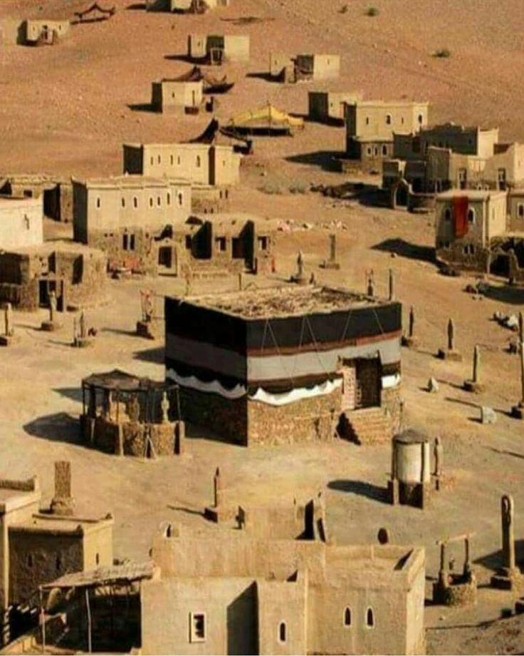

Om Hajj och Pilgrimsfärd
Vallfärden till Mekka började som en arabisk stamtradition långt före islam, troligen flera hundra år f.Kr. Det finns inget exakt startdatum, men platsen var helig redan under antiken.
Det äldsta vi vet kommer från antika författare. Den grekiske historikern Diodoros berättade på 1:a århundradet f.Kr. om ett "heligt hus" i Arabien som var högt aktat av alla araber. Den romerske geografen Ptolemaeus nämnde på 100-talet e.Kr. staden "Makoraba", vilket de flesta forskare kopplar till Mekka.
Enligt islamisk lärdom går riten tillbaka till profeterna Abraham och Ismael (må Guds frid och välsignelser vare över dem), som ska ha byggt kaaba och kallat folk att vallfärda dit genom Guds uppenbarelse. Historieskrivarna menar snarare att vallfärden växte fram gradvis som en regional stamritual kring kaaba och Zamzam.
Det som är säkert är att under profeten Muhammeds tid (må Guds frid och välsignelser vare över honom), runt år 600 e.Kr., var vallfärden redan en etablerad tradition med fasta månader, djuroffer och rundvandring kring kaaba. Han byggde alltså inte hajj från grunden, han omformade en redan existerande vallfärd.
För mer info besök gärna: